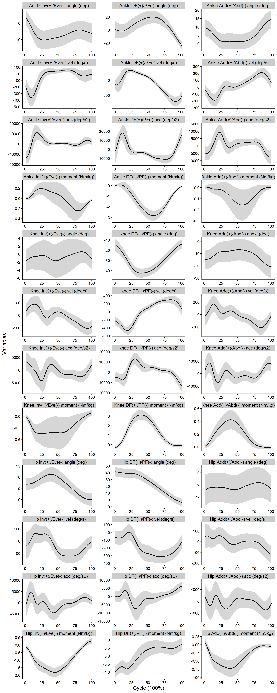
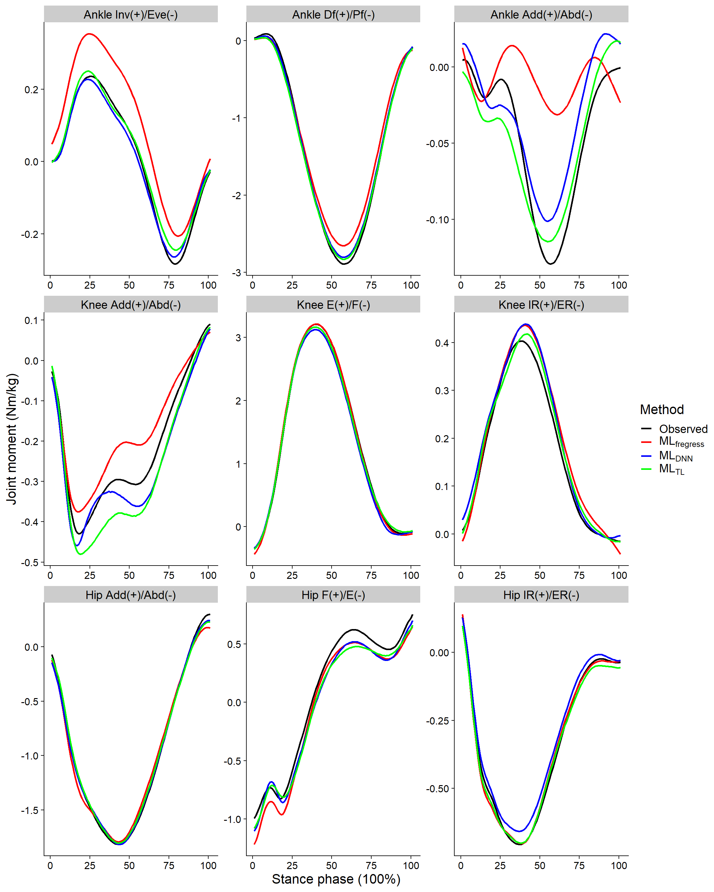

Last updated: 2021-06-03
Checks: 6 1
Knit directory: 2020_fun_regress/
This reproducible R Markdown analysis was created with workflowr (version 1.6.2). The Checks tab describes the reproducibility checks that were applied when the results were created. The Past versions tab lists the development history.
The R Markdown is untracked by Git. To know which version of the R Markdown file created these results, you’ll want to first commit it to the Git repo. If you’re still working on the analysis, you can ignore this warning. When you’re finished, you can run wflow_publish to commit the R Markdown file and build the HTML.
Great job! The global environment was empty. Objects defined in the global environment can affect the analysis in your R Markdown file in unknown ways. For reproduciblity it’s best to always run the code in an empty environment.
The command set.seed(20200511) was run prior to running the code in the R Markdown file. Setting a seed ensures that any results that rely on randomness, e.g. subsampling or permutations, are reproducible.
Great job! Recording the operating system, R version, and package versions is critical for reproducibility.
Nice! There were no cached chunks for this analysis, so you can be confident that you successfully produced the results during this run.
Great job! Using relative paths to the files within your workflowr project makes it easier to run your code on other machines.
Great! You are using Git for version control. Tracking code development and connecting the code version to the results is critical for reproducibility.
The results in this page were generated with repository version 914158b. See the Past versions tab to see a history of the changes made to the R Markdown and HTML files.
Note that you need to be careful to ensure that all relevant files for the analysis have been committed to Git prior to generating the results (you can use wflow_publish or wflow_git_commit). workflowr only checks the R Markdown file, but you know if there are other scripts or data files that it depends on. Below is the status of the Git repository when the results were generated:
Ignored files:
Ignored: .Rhistory
Ignored: .Rproj.user/
Ignored: data/
Ignored: manuscript/
Ignored: output/
Untracked files:
Untracked: analysis/code_for_publish.Rmd
Unstaged changes:
Modified: .gitignore
Modified: analysis/index.Rmd
Note that any generated files, e.g. HTML, png, CSS, etc., are not included in this status report because it is ok for generated content to have uncommitted changes.
There are no past versions. Publish this analysis with wflow_publish() to start tracking its development.
#Load packages------------------------------------------------------------
# helper
library(tidyverse)Warning: package 'tidyverse' was built under R version 4.0.3-- Attaching packages --------------------------------------- tidyverse 1.3.0 --v ggplot2 3.3.3 v purrr 0.3.4
v tibble 3.0.4 v dplyr 1.0.2
v tidyr 1.1.2 v stringr 1.4.0
v readr 1.4.0 v forcats 0.5.0Warning: package 'ggplot2' was built under R version 4.0.3Warning: package 'tibble' was built under R version 4.0.3Warning: package 'tidyr' was built under R version 4.0.3Warning: package 'readr' was built under R version 4.0.3Warning: package 'purrr' was built under R version 4.0.3Warning: package 'dplyr' was built under R version 4.0.3Warning: package 'stringr' was built under R version 4.0.3Warning: package 'forcats' was built under R version 4.0.3-- Conflicts ------------------------------------------ tidyverse_conflicts() --
x dplyr::filter() masks stats::filter()
x dplyr::lag() masks stats::lag()# modelling
library (refund)Warning: package 'refund' was built under R version 4.0.3library (keras)Warning: package 'keras' was built under R version 4.0.3library(tensorflow)Warning: package 'tensorflow' was built under R version 4.0.3# image
library (imager)Warning: package 'imager' was built under R version 4.0.3Loading required package: magrittrWarning: package 'magrittr' was built under R version 4.0.3
Attaching package: 'magrittr'The following object is masked from 'package:purrr':
set_namesThe following object is masked from 'package:tidyr':
extract
Attaching package: 'imager'The following object is masked from 'package:magrittr':
addThe following object is masked from 'package:stringr':
boundaryThe following object is masked from 'package:tidyr':
fillThe following objects are masked from 'package:stats':
convolve, spectrumThe following object is masked from 'package:graphics':
frameThe following object is masked from 'package:base':
save.image# parallel
library (doParallel)Warning: package 'doParallel' was built under R version 4.0.3Loading required package: foreachWarning: package 'foreach' was built under R version 4.0.3
Attaching package: 'foreach'The following objects are masked from 'package:purrr':
accumulate, whenLoading required package: iteratorsWarning: package 'iterators' was built under R version 4.0.3Loading required package: parallellibrary (foreach)
# plotting
library (cowplot)Warning: package 'cowplot' was built under R version 4.0.3
Attaching package: 'cowplot'The following object is masked from 'package:imager':
draw_textlibrary (ggpubr)Warning: package 'ggpubr' was built under R version 4.0.3Registered S3 methods overwritten by 'car':
method from
influence.merMod lme4
cooks.distance.influence.merMod lme4
dfbeta.influence.merMod lme4
dfbetas.influence.merMod lme4
Attaching package: 'ggpubr'The following object is masked from 'package:cowplot':
get_legend# Tables
library (officer)Warning: package 'officer' was built under R version 4.0.3library (flextable)Warning: package 'flextable' was built under R version 4.0.3
Attaching package: 'flextable'The following objects are masked from 'package:ggpubr':
border, font, rotateThe following objects are masked from 'package:imager':
height, highlight, widthThe following object is masked from 'package:purrr':
composelibrary (qwraps2)Warning: package 'qwraps2' was built under R version 4.0.3
Attaching package: 'qwraps2'The following objects are masked from 'package:ggpubr':
mean_ci, mean_sd, median_iqr# Custom measures
source("code/measures_johnson.R")
source("code/helper_func.R")# Split data---------------------------------------------------------------
train <- readRDS("output/train_data.RDS")
test <- readRDS("output/test_data.RDS")
# Get variables---------------------------------------------------------------
response_vars <- names(train)[grep("grf|hip_moment|knee_moment|ankle_moment", names(train))]
pred_vars <- names(train)[grep("angle|vel|accl", names(train))]
# Modelling---------------------------------------------------------------
for (n in seq_along(response_vars)) {
response <- response_vars[n]
# Create formula
form <- paste(response, " ~ 1 + ", paste(
paste("sff(", pred_vars,
", yind=cycle, xind=cycle)"),
collapse = " + ")
)
# initialize the model
m <- pffr(as.formula(form),
yind = cycle,
algorithm = "bam",
data = train)
# plot(m)
# Save model and predictions
saveRDS(m, file = file.path ("output", paste0("ModelFx_",response,".RDS")))
pp <- predict(m, newdata = test[-which(names(test)=="cycle")])
saveRDS(pp, file = file.path ("output", paste0("PredictionFx_",response,".RDS")))
measures <- all_measures(test[[response]], pp)
saveRDS(measures, file = file.path ("output", paste0("MeasuresFx_",response,".RDS")))
rm(m)
gc()
}# set python environment
use_condaenv("tf-gpu")
# Load data---------------------------------------------------------------
load ("output/deep_data.RData")
out_vars <- dimnames(train_y_array)[[3]]
out_axes_vars <- dimnames(train_y_array)[[4]]
# Load pretrained image model ---------------------------------------------------------------
wid <- 150
ht <- 150
# Resize input using cubic interpolation [5]
train_x <- resize(train_x_array, size_y = wid, size_z = ht, interpolation_type = 5) %>% as.array()
test_x <- resize(test_x_array, size_y = wid, size_z = ht, interpolation_type = 5) %>% as.array()
# Split train set into validate and train, as needed modelling
set.seed (2839)
val_id <- sample (unique (dimnames(train_x_array)[[1]]), size = 10)
val_id <- dimnames(train_x_array)[[1]] %in% val_id
val_x <- train_x[val_id,,,]
train_x <- train_x[!val_id,,,]
# Create model --------------------------------------------------------------
cnn1 <- cnn_block(filters = 32, kernel_size = c(3,3), pool_size = c(3,3), rate = 0.25,
shape(wid, ht, 3))
cnn2 <- cnn_block(filters = 64, kernel_size = c(3,3), pool_size = c(2,2), rate = 0.25)
cnn3 <- cnn_block(filters = 128, kernel_size = c(3,3), pool_size = c(2,2), rate = 0.25)
cnn4 <- cnn_block(filters = 64, kernel_size = c(3,3), pool_size = c(2,2), rate = 0.25)
for (out in out_vars) {
for (oaxes in out_axes_vars) {
# Select outcomes ---------------------------------------------------------
train_y <- train_y_array[!val_id,,out, oaxes]
val_y <- train_y_array[val_id,,out, oaxes]
test_y <- test_y_array[,,out, oaxes]
# Create model --------------------------------------------------------------
model <- keras_model_sequential() %>%
cnn1() %>%
cnn2() %>%
cnn3() %>%
#cnn4() %>%
# branch end
layer_flatten() %>%
layer_dense(256) %>%
layer_activation(activation = "relu") %>%
layer_batch_normalization() %>%
layer_dropout(rate = 0.5) %>%
layer_dense(101)
model %>% compile(
optimizer = "rmsprop",
#optimizer = optimizer_adam(lr = 0.0001),
loss = "mse",
metrics = c("mae")
)
history <- model %>% fit(
train_x, train_y,
epochs = 200,
batch_size = 16,
validation_data = list(val_x, val_y),
callbacks = list(
callback_learning_rate_scheduler(
tf$keras$experimental$CosineDecayRestarts(.02, 10, t_mul = 2, m_mul = .7)
)
)
)
output_path <- file.path ("output", paste0("kerasScra_", out, "_",oaxes, ".h5"))
save_model_hdf5(model, output_path)
}
}conv_base <- application_vgg16(weights = 'imagenet', include_top = FALSE, input_shape = c(wid,ht,3))
# Resize input using cubic interpolation [5]
train_x <- resize(train_x_array, size_y = wid, size_z = ht, interpolation_type = 5) %>% as.array()
test_x <- resize(test_x_array, size_y = wid, size_z = ht, interpolation_type = 5) %>% as.array()
# Split train set into validate and train, as needed modelling
set.seed (2839)
val_id <- sample (unique (dimnames(train_x_array)[[1]]), size = 10)
val_id <- dimnames(train_x_array)[[1]] %in% val_id
val_x <- train_x[val_id,,,]
train_x <- train_x[!val_id,,,]
for (out in out_vars) {
for (oaxes in out_axes_vars) {
# Select outcomes ---------------------------------------------------------
train_y <- train_y_array[!val_id,,out, oaxes]
val_y <- train_y_array[val_id,,out, oaxes]
test_y <- test_y_array[,,out, oaxes]
# Create model ------------------------------------------------------------
model <- keras_model_sequential() %>%
conv_base %>%
layer_flatten() %>%
layer_dense (units = 256, activation = "relu") %>%
layer_activation(activation = "relu") %>%
layer_batch_normalization() %>%
layer_dropout(rate = 0.5) %>%
layer_dense (units = 101, activation = "linear")
# Consider freezing bottom weights to prevent overfit
freeze_weights(conv_base)
# run model ------------------------------------------------------------
model %>% compile(
optimizer = "rmsprop",
#optimizer = optimizer_adam(lr = 0.0001),
loss = "mse",
metrics = c("mae")
)
history <- model %>% fit(
train_x, train_y,
epochs = 200,
batch_size = 16,
validation_data = list(val_x, val_y),
callbacks = list(
callback_learning_rate_scheduler(
tf$keras$experimental$CosineDecayRestarts(.02, 10, t_mul = 2, m_mul = .7)
)
)
)
output_path <- file.path ("output", paste0("kerasTL_", out, "_",oaxes, ".h5"))
save_model_hdf5(model, output_path)
}
}df <- readRDS("output/data_4sets.RDS")
## -------------------------------------------------------------------------------------
## CHECK: df$cycle has time point 43 at the end??
cycle <- 1:101
rm_obs <- which (df$cond == "(.10)50")
df <- df %>%
map_if (is.matrix, ~.[-rm_obs,]) %>%
map_if (is.vector, ~.[-rm_obs])
df$cond[df$cond == "runt30"] <- "runt35"
df_mean <- df[-which(names(df)=="cycle")] %>% lapply(., function(x){
ret <- aggregate(as.data.frame(x), by = list(df$subj, df$cond),
FUN = function(x) if(is.numeric(x)) mean(x) else x[1])[,-1*(1:2)]
if(NCOL(ret)>1)
ret <- as.matrix(ret)
return(ret)
})
df_mean$cycle <- cycle
names(df_mean)[1] <- "id"
df_mean$study <- as.factor(gsub("(.*)_(.*)","\\1",df_mean$id))
df_id_study <- df_mean[c("id","study")] %>%
as.data.frame()%>%
mutate (id = factor (id))
df_demo <- df_mean [1:8] %>%
bind_cols() %>%
mutate (study = ifelse (grepl("fukuchi", id), "fukuchi",
ifelse (grepl ("study1", id), "study1",
ifelse (grepl ("study2_pre", id), "study2pre", "study2post")))) %>%
distinct(study, id, age, ht, wt, sex)
study_id <- df_demo %>%
#distinct (study, id) %>%
group_by (study, id) %>%
tally ()
our_summary1 <-
list("Age (yo)" =
list("mean (sd)" = ~ qwraps2::mean_sd(age, denote_sd = "paren")),
"Height (m)" =
list("mean (sd)" = ~ qwraps2::mean_sd(ht, denote_sd = "paren")),
"Mass (kg)" =
list("mean (sd)" = ~ qwraps2::mean_sd(wt, denote_sd = "paren")),
"Sex" =
list("Female" = ~ qwraps2::n_perc0(sex == "f"),
"Male" = ~ qwraps2::n_perc0(sex == "m"))
)
by_cyl <- summary_table(df_demo %>%
group_by(study), our_summary1) %>%
as.data.frame()
by_cyl$Variables <- c("Age (years)",
"Height (m)",
"Mass (kg)",
"Sex-F",
"Sex-M")
by_cyl <- dplyr::select (by_cyl, Variables, everything ())
by_cyl %>%
kableExtra::kable(row.names = FALSE) %>%
kableExtra::kable_styling ()| Variables | fukuchi (N = 28) | study1 (N = 31) | study2post (N = 31) | study2pre (N = 31) |
|---|---|---|---|---|
| Age (years) | 34.75 (6.69) | 30.45 (5.74) | 30.35 (9.11) | 30.35 (9.11) |
| Height (m) | 1.76 (0.07) | 1.70 (0.07) | 1.72 (0.08) | 1.72 (0.08) |
| Mass (kg) | 69.64 (7.74) | 65.89 (10.61) | 69.57 (12.00) | 69.13 (12.65) |
| Sex-F | 1 (4) | 16 (52) | 16 (52) | 16 (52) |
| Sex-M | 27 (96) | 15 (48) | 15 (48) | 15 (48) |
# Plot
var_plot <- grepl ("ankle|knee|hip", names (df_mean))
df_plot_mean <- df_mean [var_plot] %>%
map (~apply (.x, 2, mean)) %>%
bind_cols() %>%
mutate (cycle = 1:101) %>%
pivot_longer(cols = -cycle,
names_to = "var",
values_to = "Mean")
df_plot_sd <- df_mean [var_plot] %>%
map (~apply (.x, 2, sd)) %>%
bind_cols() %>%
mutate (cycle = 1:101) %>%
pivot_longer(cols = -cycle,
names_to = "var",
values_to = "Sd")
df_plot <- df_plot_mean %>%
inner_join(df_plot_sd, by = c("cycle", "var"))
# Relvel and rename
newLvls <- c("ankle_angle_ap", "ankle_angle_ml", "ankle_angle_vt",
"ankle_vel_ap", "ankle_vel_ml", "ankle_vel_vt",
"ankle_accl_ap","ankle_accl_ml","ankle_accl_vt",
"ankle_moment_ap", "ankle_moment_ml", "ankle_moment_vt",
# knee
"knee_angle_ap", "knee_angle_ml", "knee_angle_vt",
"knee_vel_ap", "knee_vel_ml", "knee_vel_vt",
"knee_accl_ap","knee_accl_ml","knee_accl_vt",
"knee_moment_ap", "knee_moment_ml", "knee_moment_vt",
# hip
"hip_angle_ap", "hip_angle_ml", "hip_angle_vt",
"hip_vel_ap", "hip_vel_ml", "hip_vel_vt",
"hip_accl_ap","hip_accl_ml","hip_accl_vt",
"hip_moment_ap", "hip_moment_ml", "hip_moment_vt")
newLbls <- c("Ankle Inv(+)/Eve(-) angle (deg)", "Ankle DF(+)/PF(-) angle (deg)", "Ankle Add(+)/Abd(-) angle (deg)",
"Ankle Inv(+)/Eve(-) vel (deg/s)", "Ankle DF(+)/PF(-) vel (deg/s)", "Ankle Add(+)/Abd(-) vel (deg/s)",
"Ankle Inv(+)/Eve(-) acc (deg/s2)", "Ankle DF(+)/PF(-) acc (deg/s2)", "Ankle Add(+)/Abd(-) acc (deg/s2)",
"Ankle Inv(+)/Eve(-) moment (Nm/kg)", "Ankle DF(+)/PF(-) moment (Nm/kg)", "Ankle Add(+)/Abd(-) moment (Nm/kg)",
# Knee
"Knee Inv(+)/Eve(-) angle (deg)", "Knee DF(+)/PF(-) angle (deg)", "Knee Add(+)/Abd(-) angle (deg)",
"Knee Inv(+)/Eve(-) vel (deg/s)", "Knee DF(+)/PF(-) vel (deg/s)", "Knee Add(+)/Abd(-) vel (deg/s)",
"Knee Inv(+)/Eve(-) acc (deg/s2)", "Knee DF(+)/PF(-) acc (deg/s2)", "Knee Add(+)/Abd(-) acc (deg/s2)",
"Knee Inv(+)/Eve(-) moment (Nm/kg)", "Knee DF(+)/PF(-) moment (Nm/kg)", "Knee Add(+)/Abd(-) moment (Nm/kg)",
# hip
"Hip Inv(+)/Eve(-) angle (deg)", "Hip DF(+)/PF(-) angle (deg)", "Hip Add(+)/Abd(-) angle (deg)",
"Hip Inv(+)/Eve(-) vel (deg/s)", "Hip DF(+)/PF(-) vel (deg/s)", "Hip Add(+)/Abd(-) vel (deg/s)",
"Hip Inv(+)/Eve(-) acc (deg/s2)", "Hip DF(+)/PF(-) acc (deg/s2)", "Hip Add(+)/Abd(-) acc (deg/s2)",
"Hip Inv(+)/Eve(-) moment (Nm/kg)", "Hip DF(+)/PF(-) moment (Nm/kg)", "Hip Add(+)/Abd(-) moment (Nm/kg)")
p <- df_plot %>%
mutate (var = factor (var, levels = newLvls, labels = newLbls)) %>%
ggplot () +
geom_line(aes(x = cycle, y = Mean), size = 1) +
geom_ribbon(aes(x = cycle, ymin = Mean - Sd, ymax = Mean + Sd), alpha = 0.2) +
facet_wrap(~ var, ncol = 3, scales = "free") +
ylab ("Variables") +
xlab ("Cycle (100%)") +
theme_cowplot() +
theme (text = element_text(size=16))
p
# Create labels for plots
ynames <- c("AP ankle (Nm/kg)",
"ML ankle (Nm/kg)",
"Vt ankle (Nm/kg)",
"AP GRF (N/kg)",
"ML GRF (N/kg)",
"Vt GRF (N/kg)",
"AP hip (Nm/kg)",
"ML hip (Nm/kg)",
"Vt hip (Nm/kg)",
"AP knee (Nm/kg)",
"ML knee (Nm/kg)",
"Vt knee (Nm/kg)")
varLvls <- c("ankle_moment_ap",
"ankle_moment_ml",
"ankle_moment_vt",
"knee_moment_ap",
"knee_moment_ml",
"knee_moment_vt",
"hip_moment_ap",
"hip_moment_ml",
"hip_moment_vt",
"com_grf_ap",
"com_grf_ml",
"com_grf_vt")
yNewNames <- c("Ankle Inv(+)/Eve(-)",
"Ankle Df(+)/Pf(-)",
"Ankle Add(+)/Abd(-)",
"Knee Add(+)/Abd(-)",
"Knee E(+)/F(-)",
"Knee IR(+)/ER(-)",
"Hip Add(+)/Abd(-)",
"Hip F(+)/E(-)",
"Hip IR(+)/ER(-)",
"GRF AP",
"GRF ML",
"GRF VT")
# PFFR -------------------------------------------------------------------------
train <- readRDS("output/train_data.RDS")
test <- readRDS("output/test_data.RDS")
response_vars <- names(train)[grep("grf|hip_moment|knee_moment|ankle_moment", names(train))]
pred_vars <- names(train)[grep("angle|vel|accl", names(train))]
# Load models
pred_list <- list()
err_list <- list()
for(n in seq_along (response_vars)){
pred_list[[n]] <- readRDS(file.path ("output", paste0("PredictionFx_",response_vars[n],".RDS")))
err_list[[n]] <- readRDS(file.path ("output", paste0("MeasuresFx_",response_vars[n],".RDS")))
}
# Plot and get error
names (pred_list) <- response_vars
names (err_list) <- response_vars
obs.df.mean <- test[response_vars] %>%
map (get_meanSD, func = mean) %>%
bind_cols() %>%
mutate (cycle = 1:101) %>%
pivot_longer(cols = -c (cycle),
names_to = "var",
values_to = "Mean")
obs.df.sd <- test[response_vars] %>%
map (get_meanSD, func = sd) %>%
bind_cols() %>%
mutate (cycle = 1:101) %>%
pivot_longer(cols = -c (cycle),
names_to = "var",
values_to = "Sd")
obs.df <- obs.df.mean %>%
inner_join(obs.df.sd, by = c("cycle", "var")) %>%
rename (obs_Mean = Mean,
obs_Sd = Sd)
pred.df.mean <- pred_list %>%
map (get_meanSD, func = mean) %>%
bind_cols() %>%
mutate (cycle = 1:101) %>%
pivot_longer(cols = -c (cycle),
names_to = "var",
values_to = "Mean")
pred.df.sd <- pred_list %>%
map (get_meanSD, func = mean) %>%
bind_cols() %>%
mutate (cycle = 1:101) %>%
pivot_longer(cols = -c (cycle),
names_to = "var",
values_to = "Sd")
pffr.df <- pred.df.mean %>%
inner_join(pred.df.sd, by = c("cycle", "var")) %>%
inner_join(obs.df, by = c("cycle", "var")) %>%
mutate (method = "pffr")
pffr.err <- err_list %>%
map (~ map (., mean)) %>%
map (bind_cols) %>%
bind_rows(.id = "Outcomes") %>%
mutate_if(is.numeric, round, 2) %>%
mutate (`relRMSE(%)` = relRMSE * 100) %>%
select (Outcomes, RMSE, `relRMSE(%)`, cor) %>%
mutate (method = "pffr")
pffr.err$Outcomes <- c("Ankle Inv(+)/Eve(-)",
"Ankle Df(+)/Pf(-)",
"Ankle Add(+)/Abd(-)",
"GRF AP",
"GRF ML",
"GRF VT",
"Hip Add(+)/Abd(-)",
"Hip F(+)/E(-)",
"Hip IR(+)/ER(-)",
"Knee Add(+)/Abd(-)",
"Knee E(+)/F(-)",
"Knee IR(+)/ER(-)")
# Deep scratch -----------------------------------------------------------------
###################### Import data ###########################################
load ("output/deep_data.RData")
out_vars <- dimnames(train_y_array)[[3]]
out_axes_vars <- dimnames(train_y_array)[[4]]
# Load pretrained image model ---------------------------------------------------------------
wid <- 150
ht <- 150
# Resize input using cubic interpolation [5]
train_x <- resize(train_x_array, size_y = wid, size_z = ht, interpolation_type = 5) %>% as.array()
test_x <- resize(test_x_array, size_y = wid, size_z = ht, interpolation_type = 5) %>% as.array()
pred_list <- list()
err_list <- list()
fileNames <- list.files("output/", "kerasScra")
for (n in seq_along (fileNames)) {
input_path <- file.path ("output", fileNames[n])
model <- load_model_hdf5(input_path)
pred_list[[n]] <- model %>% predict(test_x)
}
obs_list <- list()
for (out in out_vars) {
for (oaxes in out_axes_vars) {
outnames <- paste0(out, "_", oaxes)
obs_list[[outnames]] <- test_y_array[,,out, oaxes]
}
}
for (n in seq_along (fileNames)) {
err_list[[n]] <- all_measures(obs_list[[n]], pred_list[[n]])
}
# Plot and get error
varNames <- fileNames %>%
str_remove("kerasScra_") %>%
str_remove(".h5")
names (obs_list) <- names (pred_list) <- varNames
obs.df.mean <- obs_list %>%
map (get_meanSD, func = mean) %>%
bind_cols() %>%
mutate (cycle = 1:101) %>%
pivot_longer(cols = -c (cycle),
names_to = "var",
values_to = "Mean")
obs.df.sd <- obs_list %>%
map (get_meanSD, func = sd) %>%
bind_cols() %>%
mutate (cycle = 1:101) %>%
pivot_longer(cols = -c (cycle),
names_to = "var",
values_to = "Sd")
obs.df <- obs.df.mean %>%
inner_join(obs.df.sd, by = c("cycle", "var"))%>%
rename (obs_Mean = Mean,
obs_Sd = Sd)
pred.df.mean <- pred_list %>%
map (get_meanSD, func = mean) %>%
bind_cols() %>%
mutate (cycle = 1:101) %>%
pivot_longer(cols = -c (cycle),
names_to = "var",
values_to = "Mean")
pred.df.sd <- pred_list %>%
map (get_meanSD, func = mean) %>%
bind_cols() %>%
mutate (cycle = 1:101) %>%
pivot_longer(cols = -c (cycle),
names_to = "var",
values_to = "Sd")
cnn.df <- pred.df.mean %>%
inner_join(pred.df.sd, by = c("cycle", "var")) %>%
inner_join(obs.df, by = c("cycle", "var")) %>%
mutate (method = "deep_scratch")
cnn.err <- err_list %>%
map (~ map (., mean)) %>%
map (bind_cols) %>%
bind_rows(.id = "Outcomes") %>%
mutate_if(is.numeric, round, 2) %>%
mutate (`relRMSE(%)` = relRMSE * 100) %>%
select (Outcomes, RMSE, `relRMSE(%)`, cor) %>%
mutate (method = "deep_scratch")
cnn.err$Outcomes <- c("Ankle Inv(+)/Eve(-)",
"Ankle Df(+)/Pf(-)",
"Ankle Add(+)/Abd(-)",
"GRF AP",
"GRF ML",
"GRF VT",
"Hip Add(+)/Abd(-)",
"Hip F(+)/E(-)",
"Hip IR(+)/ER(-)",
"Knee Add(+)/Abd(-)",
"Knee E(+)/F(-)",
"Knee IR(+)/ER(-)")
# Deep transfer -----------------------------------------------------------------
###################### Import data ###########################################
pred_list <- list()
err_list <- list()
fileNames <- list.files("output/", "kerasTL")
for (n in seq_along (fileNames)) {
input_path <- file.path ("output", fileNames[n])
model <- load_model_hdf5(input_path)
pred_list[[n]] <- model %>% predict(test_x)
}
obs_list <- list()
for (out in out_vars) {
for (oaxes in out_axes_vars) {
outnames <- paste0(out, "_", oaxes)
obs_list[[outnames]] <- test_y_array[,,out, oaxes]
}
}
for (n in seq_along (fileNames)) {
err_list[[n]] <- all_measures(obs_list[[n]], pred_list[[n]])
}
# Plot and get error
varNames <- fileNames %>%
str_remove("kerasTL_") %>%
str_remove(".h5")
names (obs_list) <- names (pred_list) <- varNames
obs.df.mean <- obs_list %>%
map (get_meanSD, func = mean) %>%
bind_cols() %>%
mutate (cycle = 1:101) %>%
pivot_longer(cols = -c (cycle),
names_to = "var",
values_to = "Mean")
obs.df.sd <- obs_list %>%
map (get_meanSD, func = sd) %>%
bind_cols() %>%
mutate (cycle = 1:101) %>%
pivot_longer(cols = -c (cycle),
names_to = "var",
values_to = "Sd")
obs.df <- obs.df.mean %>%
inner_join(obs.df.sd, by = c("cycle", "var"))%>%
rename (obs_Mean = Mean,
obs_Sd = Sd)
pred.df.mean <- pred_list %>%
map (get_meanSD, func = mean) %>%
bind_cols() %>%
mutate (cycle = 1:101) %>%
pivot_longer(cols = -c (cycle),
names_to = "var",
values_to = "Mean")
pred.df.sd <- pred_list %>%
map (get_meanSD, func = mean) %>%
bind_cols() %>%
mutate (cycle = 1:101) %>%
pivot_longer(cols = -c (cycle),
names_to = "var",
values_to = "Sd")
TL.df <- pred.df.mean %>%
inner_join(pred.df.sd, by = c("cycle", "var")) %>%
inner_join(obs.df, by = c("cycle", "var")) %>%
mutate (method = "deep_TL")
TL.err <- err_list %>%
map (~ map (., mean)) %>%
map (bind_cols) %>%
bind_rows(.id = "Outcomes") %>%
mutate_if(is.numeric, round, 2) %>%
mutate (`relRMSE(%)` = relRMSE * 100) %>%
select (Outcomes, RMSE, `relRMSE(%)`, cor) %>%
mutate (method = "deep_TL")
TL.err$Outcomes <-c("Ankle Inv(+)/Eve(-)",
"Ankle Df(+)/Pf(-)",
"Ankle Add(+)/Abd(-)",
"GRF AP",
"GRF ML",
"GRF VT",
"Hip Add(+)/Abd(-)",
"Hip F(+)/E(-)",
"Hip IR(+)/ER(-)",
"Knee Add(+)/Abd(-)",
"Knee E(+)/F(-)",
"Knee IR(+)/ER(-)")
df.plot <- bind_rows(pffr.df,
cnn.df,
TL.df) %>%
mutate (var = factor (var, levels = varLvls, labels = yNewNames),
Method = method) %>%
filter (!grepl ("GRF", var)) %>%
select (-method)
err.df <- bind_rows(pffr.err,
cnn.err,
TL.err) %>%
mutate (Outcomes = factor (Outcomes, levels = yNewNames),
Method = factor (method, levels = c("pffr", "deep_scratch", "deep_TL"))) %>%
arrange (Outcomes, Method) %>%
filter (!grepl ("GRF", Outcomes)) %>%
select (Outcomes, Method, everything(), -method)
saveRDS(list (df.plot = df.plot,
err.df = err.df),
"output/prediction_results.RDS")df.plot <- results$df.plot
temp1 <- df.plot %>%
select (cycle, var, obs_Mean, obs_Sd) %>%
rename (Mean = obs_Mean,
Sd = obs_Sd) %>%
mutate (Method = "obs")
df.plot <- df.plot %>%
select (!matches ("obs")) %>%
bind_rows(temp1) %>%
mutate (Method = factor (Method, levels = c("obs", "pffr", "deep_scratch", "deep_TL")))
p <- ggplot (df.plot) +
geom_line(aes(x = cycle, y = Mean, colour = Method), size = 1) +
#geom_ribbon(aes(x = cycle, ymin = Mean - Sd, ymax = Mean + Sd, fill = method), alpha = 0.1) +
facet_wrap(~ var, scales = "free", ncol = 3) +
scale_color_manual(values = c("black", "red", "blue", "green")) +
scale_fill_manual(values = c("black", "red", "blue", "green")) +
guides(fill = "none") +
ylab ("Joint moment (Nm/kg)") +
xlab ("Stance phase (100%)") +
theme_cowplot() +
theme (text = element_text(size=16))
p
err.df <- results$err.df
err.df %>%
kableExtra::kable() %>%
kableExtra::kable_styling ()| Outcomes | Method | RMSE | relRMSE(%) | cor |
|---|---|---|---|---|
| Ankle Inv(+)/Eve(-) | pffr | 0.19 | 29 | 0.92 |
| Ankle Inv(+)/Eve(-) | deep_scratch | 0.07 | 13 | 0.98 |
| Ankle Inv(+)/Eve(-) | deep_TL | 0.10 | 17 | 0.96 |
| Ankle Df(+)/Pf(-) | pffr | 0.54 | 19 | 0.95 |
| Ankle Df(+)/Pf(-) | deep_scratch | 0.16 | 5 | 1.00 |
| Ankle Df(+)/Pf(-) | deep_TL | 0.22 | 7 | 0.99 |
| Ankle Add(+)/Abd(-) | pffr | 0.16 | 57 | 0.20 |
| Ankle Add(+)/Abd(-) | deep_scratch | 0.06 | 37 | 0.64 |
| Ankle Add(+)/Abd(-) | deep_TL | 0.07 | 41 | 0.52 |
| Knee Add(+)/Abd(-) | pffr | 0.19 | 29 | 0.79 |
| Knee Add(+)/Abd(-) | deep_scratch | 0.14 | 22 | 0.86 |
| Knee Add(+)/Abd(-) | deep_TL | 0.20 | 31 | 0.71 |
| Knee E(+)/F(-) | pffr | 0.49 | 13 | 0.98 |
| Knee E(+)/F(-) | deep_scratch | 0.25 | 7 | 0.99 |
| Knee E(+)/F(-) | deep_TL | 0.28 | 8 | 0.99 |
| Knee IR(+)/ER(-) | pffr | 0.19 | 38 | 0.78 |
| Knee IR(+)/ER(-) | deep_scratch | 0.08 | 19 | 0.96 |
| Knee IR(+)/ER(-) | deep_TL | 0.09 | 21 | 0.96 |
| Hip Add(+)/Abd(-) | pffr | 0.34 | 17 | 0.97 |
| Hip Add(+)/Abd(-) | deep_scratch | 0.19 | 9 | 0.99 |
| Hip Add(+)/Abd(-) | deep_TL | 0.24 | 11 | 0.99 |
| Hip F(+)/E(-) | pffr | 0.43 | 20 | 0.91 |
| Hip F(+)/E(-) | deep_scratch | 0.24 | 12 | 0.96 |
| Hip F(+)/E(-) | deep_TL | 0.31 | 16 | 0.94 |
| Hip IR(+)/ER(-) | pffr | 0.23 | 25 | 0.90 |
| Hip IR(+)/ER(-) | deep_scratch | 0.10 | 12 | 0.97 |
| Hip IR(+)/ER(-) | deep_TL | 0.12 | 15 | 0.97 |
sessionInfo()R version 4.0.2 (2020-06-22)
Platform: x86_64-w64-mingw32/x64 (64-bit)
Running under: Windows 10 x64 (build 19041)
Matrix products: default
locale:
[1] LC_COLLATE=English_United Kingdom.1252
[2] LC_CTYPE=English_United Kingdom.1252
[3] LC_MONETARY=English_United Kingdom.1252
[4] LC_NUMERIC=C
[5] LC_TIME=English_United Kingdom.1252
attached base packages:
[1] parallel stats graphics grDevices utils datasets methods
[8] base
other attached packages:
[1] qwraps2_0.5.0 flextable_0.6.1 officer_0.3.16 ggpubr_0.4.0
[5] cowplot_1.1.1 doParallel_1.0.16 iterators_1.0.13 foreach_1.5.1
[9] imager_0.42.3 magrittr_2.0.1 tensorflow_2.2.0 keras_2.3.0.0
[13] refund_0.1-23 forcats_0.5.0 stringr_1.4.0 dplyr_1.0.2
[17] purrr_0.3.4 readr_1.4.0 tidyr_1.1.2 tibble_3.0.4
[21] ggplot2_3.3.3 tidyverse_1.3.0
loaded via a namespace (and not attached):
[1] readxl_1.3.1 uuid_0.1-4 backports_1.2.1
[4] grpreg_3.3.0 workflowr_1.6.2 systemfonts_0.3.2
[7] igraph_1.2.6 splines_4.0.2 RLRsim_3.1-6
[10] fda_5.1.9 tfruns_1.4 digest_0.6.27
[13] htmltools_0.5.0 tiff_0.1-6 fansi_0.4.1
[16] cluster_2.1.0 ks_1.11.7 hdrcde_3.3
[19] openxlsx_4.2.3 modelr_0.1.8 fds_1.8
[22] jpeg_0.1-8.1 colorspace_2.0-0 rvest_0.3.6
[25] haven_2.3.1 xfun_0.20 crayon_1.3.4
[28] RCurl_1.98-1.2 jsonlite_1.7.2 lme4_1.1-26
[31] zeallot_0.1.0 glue_1.4.2 kableExtra_1.3.1
[34] gtable_0.3.0 webshot_0.5.2 car_3.0-10
[37] abind_1.4-5 scales_1.1.1 mvtnorm_1.1-1
[40] DBI_1.1.0 rstatix_0.6.0 Rcpp_1.0.6
[43] pbs_1.1 viridisLite_0.3.0 magic_1.5-9
[46] reticulate_1.18-9006 foreign_0.8-81 mclust_5.4.7
[49] httr_1.4.2 ellipsis_0.3.1 rainbow_3.6
[52] farver_2.0.3 pkgconfig_2.0.3 dbplyr_2.0.0
[55] labeling_0.4.2 tidyselect_1.1.0 rlang_0.4.10
[58] later_1.1.0.1 munsell_0.5.0 cellranger_1.1.0
[61] tools_4.0.2 cli_2.2.0 generics_0.1.0
[64] broom_0.7.4.9000 evaluate_0.14 yaml_2.2.1
[67] knitr_1.30 fs_1.5.0 zip_2.1.1
[70] readbitmap_0.1.5 nlme_3.1-151 whisker_0.4
[73] xml2_1.3.2 compiler_4.0.2 rstudioapi_0.13
[76] gamm4_0.2-6 curl_4.3 png_0.1-7
[79] ggsignif_0.6.0 reprex_0.3.0 statmod_1.4.35
[82] pcaPP_1.9-73 stringi_1.5.3 highr_0.8
[85] gdtools_0.2.3 lattice_0.20-41 Matrix_1.2-18
[88] nloptr_1.2.2.2 vctrs_0.3.6 pillar_1.4.7
[91] lifecycle_0.2.0 data.table_1.14.0 bitops_1.0-6
[94] httpuv_1.5.4 R6_2.5.0 promises_1.1.1
[97] KernSmooth_2.23-18 bmp_0.3 rio_0.5.16
[100] codetools_0.2-18 boot_1.3-25 MASS_7.3-53
[103] assertthat_0.2.1 rprojroot_2.0.2 withr_2.3.0
[106] mgcv_1.8-33 hms_0.5.3 grid_4.0.2
[109] minqa_1.2.4 rmarkdown_2.6 carData_3.0-4
[112] git2r_0.27.1 lubridate_1.7.9.2 base64enc_0.1-3